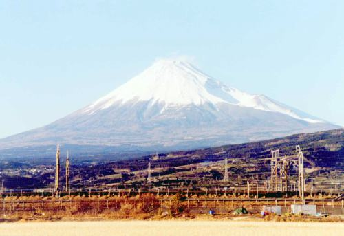
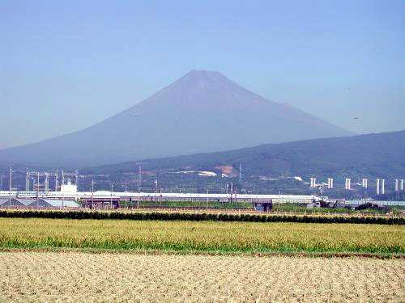
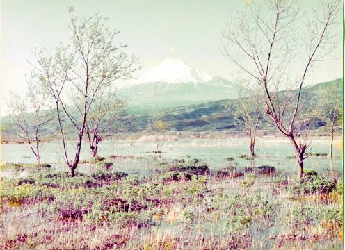

次ページへ
次ページへ
| 長崎大学附属図書館古写真で富士山を見よう。 長崎大学古写真Ｐａｇｅへ(目録番号499) |
 |
浮島工業団地 から写した 富士山 の写真です。 （組合渡井専務撮影） |
 |
浮島沼釣り場から 写した富士山 の写真です。 （組合天野02.09.20デジカメ） 沼津から西に向かうと愛鷹山 に裾野が隠れていた富士山が 浮島工業団地付近から全景を 見ることができます。 長崎大学の古写真の風景→富士山→ 目録番号499をご覧 下さい。昔は浮島この 一帯は浮島沼だった そうです。 |
 |
昭和５０年頃の 工業団地東から 写した富士山 の写真です。 （組合写真スキャナー取込） 工業団地造成頃の富士山です。 広大な湿地体を見ることが できます。 後ろに白く見えるのが新幹線です。 今はこの付近は田園風景に 様変わりしました。 |
次ページへ